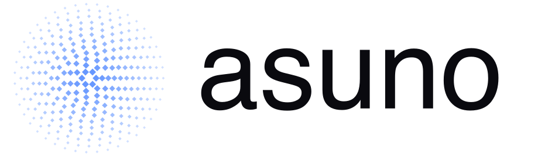
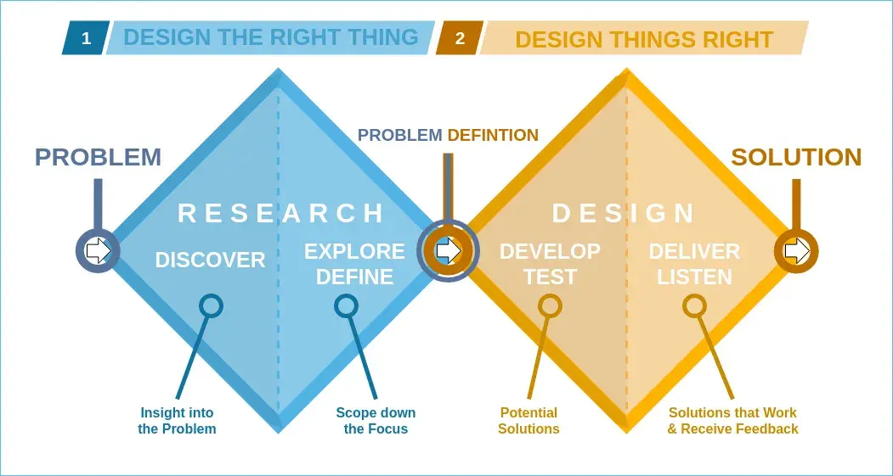

Kick-off Workshop / 19. Februar 2026
AI-Powered
Knowledge Base
Von verteiltem Wissen zu einer zentralen, intelligenten Plattform — mit semantischer Suche und KI-gestützten Antworten.
Agenda
Was wir heute besprechen
Ausgangslage
Vision & Ansatz
User Stories & Module
Architektur & RAG
Content & Roadmap
Offene Fragen
Ausgangslage
Unser Vorgehen
Wir befinden uns in der Research-Phase: Das Problem verstehen, bevor wir Lösungen bauen.

Ausgangslage
6 identifizierte Problemfelder
Erkenntnisse aus den Mitarbeiter-Interviews:
Information verstreut
Mitarbeiter suchen parallel in Loop, Z:-Laufwerk, E-Mails und bei Kollegen. Kein zentraler Einstiegspunkt.
Personenabhängigkeit
Kritisches Wissen in einzelnen Köpfen. „Frag Eric oder Alex“ als wiederkehrendes Muster.
Vertrauen fehlt
Z:-Laufwerk enthält veraltete Informationen. Keine Möglichkeit, Aktualität einzuschätzen.
Dokumentation als Bürde
Hoher Aufwand beim Erstellen und Pflegen. Genannte Reibungspunkte: Albert, Eric, Alexandra.
Kein Feedback-Loop
„Ich weiss nicht, ob meine Docs gefunden und genutzt werden.“ Keine Analytics.
Änderungen unsichtbar
„Ich erfahre es erst, wenn etwas nicht mehr funktioniert.“ Keine Benachrichtigungen.
Vision & Ansatz
Lösungsansatz: Intelligente Knowledge Base
Wissen existiert bereits, es muss gefunden, verstanden und vertraut werden.
Zentrale Suche
- Ein Einstiegspunkt für alle Inhalte
- Loop, Z:-Laufwerk, interne Artikel
- Suche mit eigenen Worten oder Stichwörtern
KI-gestützte Antworten
- Direkte Antwort statt Dokumente lesen
- Immer mit Quellenangabe
- Keine Eskalation bei Standardfragen
Vertrauenswürdige Inhalte
- Letztes Update und Autor sichtbar
- Veraltetes kann markiert werden
- Vertrauen in die Wissensbasis
MVP / V1
Anforderungen an das MVP
7 User Stories, gruppiert in drei Kernbereiche
Suchen & Finden
US-1
Eine zentrale Suche über alle Quellen, per Stichwort oder natürlicher Sprache. Schluss mit dem parallelen Suchen in Loop, Z:-Laufwerk und E-Mails.
US-2
Sofortige KI-Antworten auf Fehlermeldungen und häufige Probleme, direkt im Kundengespräch, ohne Eskalation an Kollegen.
Erstellen & Strukturieren
US-3
Artikel schnell erstellen und aktualisieren mit Markdown, Tags und Kategorien. Dokumentation soll sich nicht wie eine Bürde anfühlen.
US-6
FAQ-Bereich für wiederkehrende Fragen wie Arbeitszeiten, Urlaub oder Kündigungsfristen.
US-7
Inhalte von Beginn an klar strukturieren nach Abteilung, Kategorie und Tags.
Vertrauen & Qualität
US-4
Artikel als veraltet oder fehlerhaft kennzeichnen, damit die Wissensqualität dauerhaft hoch bleibt.
US-5
Jederzeit sehen, wann ein Artikel zuletzt aktualisiert wurde und von wem, um Verlässlichkeit einschätzen zu können.
So könnte es aussehen
Knowledge Base — Interaktive Demo
User Stories im Interface
Architektur & Tech Stack
Technischer Ansatz
Grundgedanke
Wir bauen eine KI-gestützte interne Knowledge Base, kein Wiki, kein Chatbot, sondern ein Hybrid aus strukturierten Artikeln, semantischer Suche und KI-generierten Antworten.
Was ist RAG?
Retrieval-Augmented Generation ist eine Methode, bei der ein KI-System vor der Antwort relevante Informationen aus einer Wissensdatenbank abruft und in die Antwort integriert. Die Ergebnisse basieren dadurch auf geprüften, aktuellen Quellen und sind verlässlich.
Tech Stack
| Ebene | Technologie | Begründung |
|---|---|---|
| Frontend | Next.js + Tailwind | Schnelle, moderne Oberfläche. Server-Side Rendering für Performance. |
| Backend / API | Next.js API Routes + Supabase | Postgres, Auth, Echtzeit und Storage in einem Paket. Minimaler Infrastruktur-Aufwand. |
| Datenbank | Supabase Postgres + pgvector | Relationale Daten für Artikel/Nutzer/Tags + Vektordatenbank für semantische Suche. Durchsucht Inhalte nach ihrer inhaltlichen Bedeutung statt nach exakten Stichwörtern und findet so auch in großen Wissensbeständen schnell die relevantesten Informationen. |
| KI / Suche | Model Agnostic + Embeddings | GPT, Claude, Gemini für Antwortgenerierung (RAG). Embeddings über Voyage oder OpenAI. |
| Dateispeicher | Supabase Storage | Für hochgeladene PDFs, Bilder und Anhänge zu Artikeln. |
| Auth | Supabase Auth (SSO später) | E-Mail/Passwort im MVP, Microsoft SSO ab V2. |
| Deployment | Vercel + Supabase | Standard-Stack. Schnelle Deployments, Preview Environments. |
| Benachrichtigungen | E-Mail (Resend) + In-App | Benachrichtigungen bei Artikeländerungen (US-8). |
KI-Suche
Wie die KI-Suche funktioniert
Was ist eine Vektordatenbank?
Eine Vektordatenbank durchsucht Inhalte nach ihrer semantischen Bedeutung (inhaltlicher Sinn und Kontext eines Textes) statt nach exakten Stichwörtern. So werden auch in großen Wissensbeständen schnell die relevantesten Informationen gefunden.
1. Frage
Nutzer stellt eine Frage
z.B. „Wie setze ich den Konnektor zurück?“
Die Frage wird in einen Vektor umgewandelt und gleichzeitig als Stichwortsuche verarbeitet.
2. Suche
Relevante Inhalte finden
Zwei Suchverfahren laufen parallel und ergänzen sich:
Vektor-Suche findet inhaltlich ähnliche Passagen
Keyword-Suche findet exakte Begriffe und Fachbegriffe
Hybrid Merge kombiniert beide Ergebnisse
3. Antwort
KI generiert die Antwort
Die gefundenen Passagen werden der KI als Kontext übergeben.
Verständliche Antwort in natürlicher Sprache
Quellenangaben mit Links zu den Artikeln
Keine Halluzination, nur eure Daten
Content Strategie
Von den Quellen zur Struktur
Quellen / Inputs
Manuelle Erstellung
Rich-Text-Editor mit Tags, Kategorien, Versionshistorie
Bulk Import
Migration aus Loop + Z:-Laufwerk (DOCX/PDF)
KI-Drafting
Rohe Notizen einfügen, KI erstellt strukturierten Entwurf
Voice to Text
Whisper-Transkription für nahtlose Dokumentation
Kategorien / Output
Kundenservice
TI-Troubleshooting, psychodat, Hardware, Häufige Fragen
Vertrieb
Produkte, Preise, Abos, Kündigungen
Buchhaltung
Rechnungslauf, SEPA, embloom
Personal / HR
Wegweiser, Arbeitszeiten, Onboarding
IT / Infrastruktur
Prozesse / Abläufe
Changelog
Roadmap
Geplante Erweiterungen nach MVP
Priorisiert auf Basis von Mitarbeiter-Input und strategischem Mehrwert.
Knowledge Articles, AI Search, FAQ, Notifications, Analytics
User Stories US-1 bis US-7
US-10
Geführte Troubleshooting-Flows für TI-Probleme
US-11
Strukturierte Onboarding-Pfade pro Rolle
US-12
Wissensrisiko-Dashboard: Zeigt, welche Themenbereiche nur von einer einzelnen Person abgedeckt werden
US-13
Interaktive Checklisten für wiederkehrende Prozesse
US-14
Externes Kundenportal / Digitales Handbuch
US-15
Kontextsensitive Hilfe in psychodat-Modulen
US-16
Visuelle Guides und kurze Videos
Klärungsbedarf
Offene Fragen
Folgende Punkte müssen vor Projektstart gemeinsam geklärt werden.
- Welche Datenformate sollen verarbeitet werden?
z.B. PDF, PNG, Excel, MP4, DOCX. Welche Formate sind für das MVP relevant, welche kommen später? - Wo werden die Daten hochgeladen?
Über welchen Weg kommen die Inhalte ins System? Manuell, per Bulk Import, aus bestehenden Quellen (Loop, Z:-Laufwerk)? - Wer ist verantwortlich für den initialen Upload?
Welche Abteilungen/Personen liefern die ersten Inhalte zu? Gibt es pro Bereich einen Ansprechpartner? - Bis wann müssen die Inhalte bereitstehen?
Deadline für den initialen Content, damit das MVP mit echten Daten getestet werden kann.
Nächste Schritte
Nächste Schritte
1. Offene Fragen klären
Datenformate, Verantwortlichkeiten und Deadlines gemeinsam festlegen.
2. Architektur und Ausarbeitung
Technische Grundlage aufbauen, Systemarchitektur finalisieren und mit der Entwicklung starten.
3. MVP zum Testen bereitstellen
Zeitnah eine erste Version liefern, Feedback einholen, iterieren und verbessern.
Wir freuen uns auf die Zusammenarbeit!